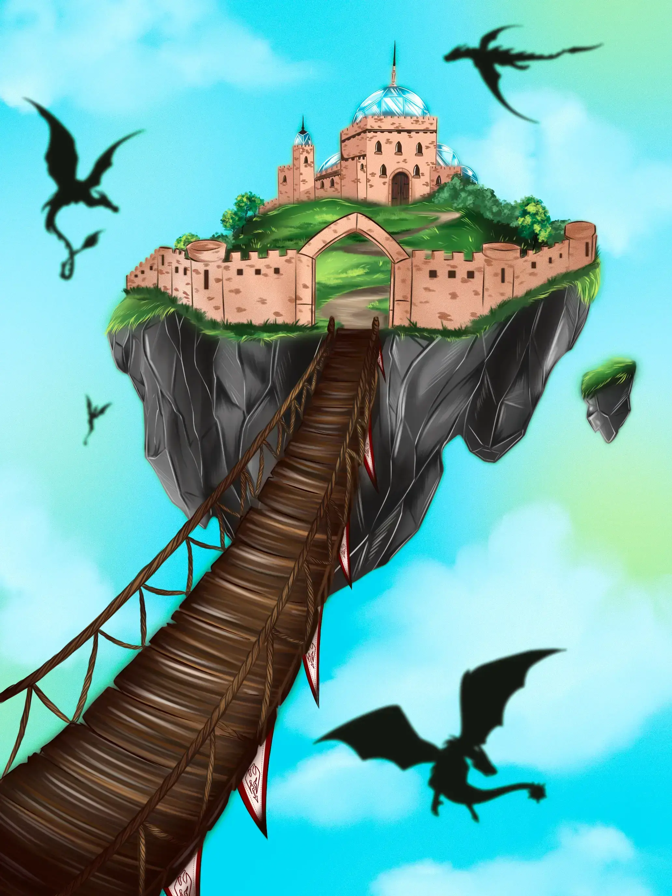

✨
Arzanskân
100%
Ta jauge est vide… ⚡
Pour poursuivre ta visite d’Arzankia, récolte un ingrédient magique !
Monde des Yakkas

« Dans ce monde de cendres et de sagesse, les Yakkas élèvent des dragons majestueux, gardiens sacrés d’une source millénaire aux pouvoirs incommensurables. »
Extrait du livre
Entrée du monde
← Retour